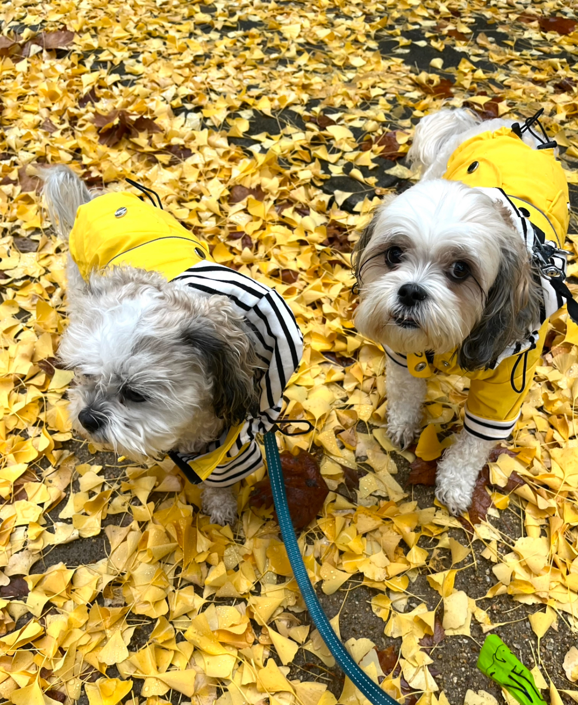
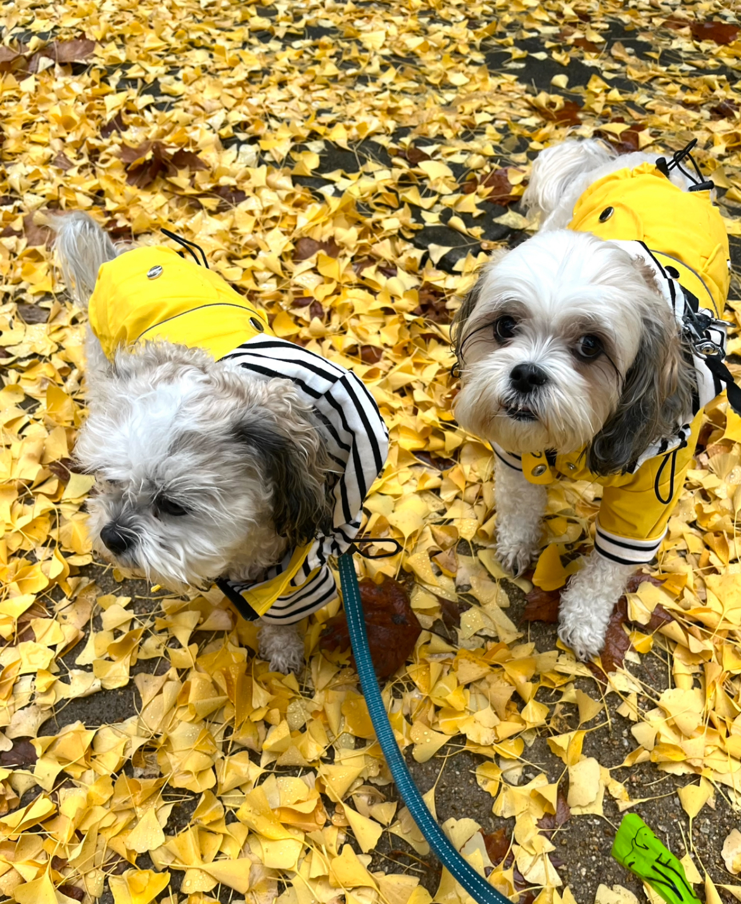

About Me
Hello! I'm Samuel, a UX designer looking to better user experiences through intuitive layout and storytelling. I have always been interested in the psychology of design, and am eager to help coordinate both research-backed and creative direction.
I graduated from The University of Texas at Austin with a BBA in Marketing, but quickly grew to love UX subsequently. After leaving Austin, I pursued my passion project, brushies, while teaching myself user experience—through online courses (and a few good books)! Now equipped with a comprehensive understanding of UX, I dilligently work to polish my skills as a designer.
When I'm not working, you can find me doodlin', jamming out to Madonna's '90s hits, or walking my two pups, Tink and Tilly.
 
